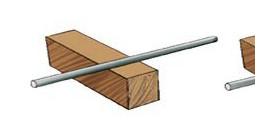
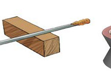
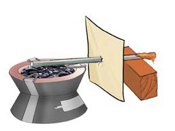

Hatua
Laza kipande cha metali juu ya kipande cha ubao. Angalia Kielelezo namba 2(a).
Weka nta au mshumaa katika ncha moja ya kipande cha metali angalia kielelezo namba 2(b).
Weka kipande cha karatasi ngumu au ya boksi kati ya nta na ubao ili huzuia nta kupata joto moja kwa moja kutoka kwenye jiko. Angalia Kielelezo namba 2(c).
Weka jiko katika ncha ya upande mwingine wa kipande cha metali. Angalia Kielelezo namba 2(c).



Kielelezo namba 2: Kusafiri kwa joto kwenye vitu yabisi
Washa jiko, kisha subiri. Je, nini kinatokea kwenye nta?
Andika matokeo ya kile kilichotokea kwenye nta baada ya kuwasha moto.
Matokeo
Baada ya kuwasha jiko, nta iliyeyuka. Hii inaonesha kuwa joto lilisafiri kutoka kwenye chanzo, kipande cha metali hadi kwenye nta.
Hitimisho
Jaribio hili linathibitisha kuwa joto husafiri katika maada yabisi kwa njia ya mpitisho.